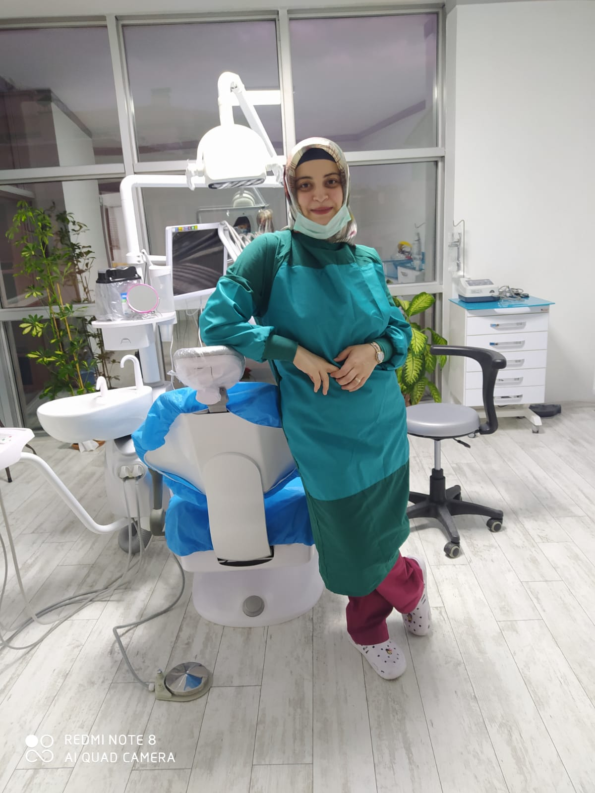
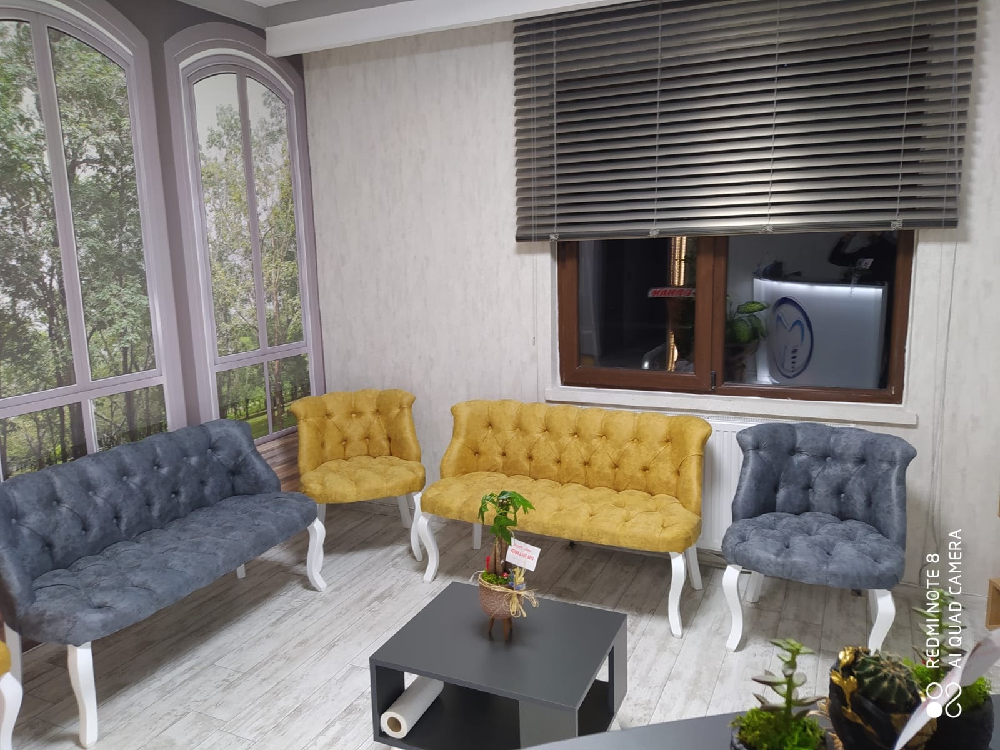

Diş Hekimi · Afyonkarahisar Merkez
Gülüşünüz için sakin, özenli ve şeffaf bir diş hekimliği.
Tedavi ve maliyet baştan konuşulur, her adım anlatılarak ilerler. Diş korkusu yaşıyorsanız bunu rahatça paylaşabilirsiniz.

Hijyen
Temiz bir klinik; hasta yorumlarında sık geçen bir konu.
Şeffaf fiyatlandırma
Tedavi ve maliyet baştan konuşulur.
Diş korkusuna anlayış
Sabırlı, acele etmeyen bir yaklaşım.
Güncel bilgi
TDB Diş Hekimliği Kongresi'ne katılım.
Tedaviler
Neler yapılıyor?
Bir karta dokunarak kısa bilgiye ulaşın. Size uygun tedavi muayene sonrası belirlenir.

Hekimimiz
Dt. Şadiye Hande Orhan
Afyonkarahisar Merkez'de diş hekimi olarak hasta kabul ediyor. Google yorumlarında hastalar sıklıkla nazik elini, diş korkusu karşısındaki sabrını, hijyene verdiği önemi ve tedavi ile maliyet hakkındaki açık anlatımını dile getiriyor.
Bilgilerini güncel tutmak için yakın zamanda TDB Diş Hekimliği Kongresi'ne katıldı.
Randevu planlayınYorumlar
Hastalar ne diyor?
Google yorumlarında öne çıkan temalardan kısa özetler.
Eli çok hafif; tedavi sırasında neredeyse hiçbir şey hissetmedim.
Diş korkum vardı; sabırlı yaklaşımı sayesinde sakin kalabildim.
Klinik temiz; fiyat dahil her şey açıkça anlatıldı.
Randevu
Randevu planlayın
Formu doldurun; mesajınız WhatsApp'ta hazır gelsin. Dilerseniz doğrudan arayın.
SSS
Sık sorulanlar
Nasıl randevu alırım?
0507 110 02 00 numarasını arayabilir veya aynı numaradan WhatsApp ile yazabilirsiniz. Sabit hat: 0272 214 24 77. Bu sayfadaki randevu formu da mesajınızı WhatsApp'a hazırlar.
Hangi tedavileri yapıyorsunuz?
Estetik diş hekimliği, implant, zirkonyum ve porselen kaplama, kanal tedavisi, diş beyazlatma, dolgu ve diş taşı temizliği gibi genel diş hekimliği hizmetleri sunulur. Size uygun tedavi muayene sonrası belirlenir.
Diş korkum var, ne yapmalıyım?
Randevu alırken veya muayenede bunu açıkça söylemeniz yeterlidir. Hasta yorumlarında sabırlı ve anlayışlı yaklaşım sık dile getirilir; tedavi adım adım ve açıklanarak ilerler.
Klinik nerede?
Dumlupınar Mh. Osman Atilla Cd. Ihlamur Apt. No:6 Kat:2 D:3, 03200 Merkez / Afyonkarahisar. Çalışma saatleri hafta içi 09:00–18:30; hafta sonu için arayınız.
Konum
Bizi bulun
Dt. Şadiye Hande Orhan
Dumlupınar Mh. Osman Atilla Cd. Ihlamur Apt. No:6 Kat:2 D:3, 03200 Merkez / Afyonkarahisar
Saatler: Hafta içi 09:00–18:30, hafta sonu için arayınız
Yol tarifi